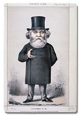

| |
We do not know for
certain if any objects from the Ancient Near East were in the collection
when the Museum was founded in 1753. The founding collection of Sir
Hans Sloane (1660-1753) did not apparently include any such material.
However, curios from the Near East, particularly in the form of seals,
were in a number of early collections including that of Sir William
Hamilton (1730-1803) purchased by the British Museum in 1772.
The Museum also
acquired at this early date a number of sculptures from Persepolis.
The next significant addition (in 1825) was the collection of Claudius
James Rich (1787-1820), the East India Company's representative at Baghdad
and a brilliant orientalist.
The collection was
dramatically enlarged by the excavations of A.H. Layard (1817-94) at
the Assyrian sites of Nimrud and Nineveh between 1845 and 1851. At Nimrud,
Layard found and excavated the state apartments in the North-West Palace
of Ashurnasirpal II, as well as three other palaces and various temples.
He also opened in the Palace of Sennacherib at Nineveh 'no less than
seventy-one halls, chambers and passages, whose walls, almost without
an exception, had been panelled with slabs of sculptured alabaster recording
the wars, the triumphs, and the great deeds of the Assyrian king.'
As a result of these
excavations, large numbers of stone bas-reliefs, stelae, including the
Black
Obelisk of Shalmaneser III, gigantic gateway
figures, and a rich assortment of small finds, were brought to the
British Museum. Layard's work was continued by his local assistant,
Hormuzd Rassam. In 1852-54 he went on to discover the North Palace of
Ashurbanipal at Nineveh with many magnificent reliefs, including the
famous series showing the Royal
Lion Hunt. He also discovered the Royal Library of Ashurbanipal,
a large collection of cuneiform tablets of enormous importance.
1
- 2 - 3 - 4
- 5
1 of 5
|
|

Caricature
of Sir Henry Layard from Vanity Fair, August, 1869
|
|
|
|